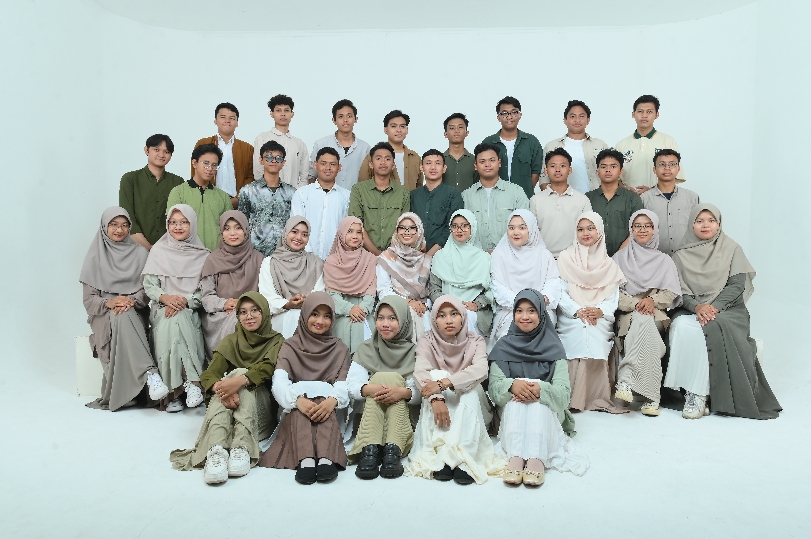
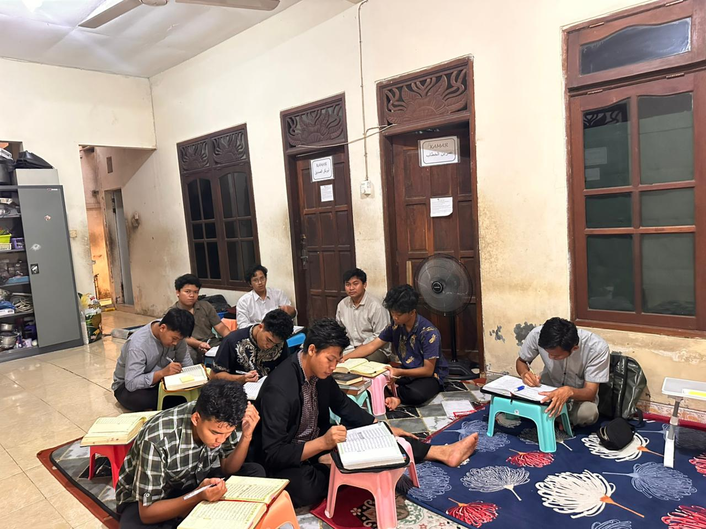
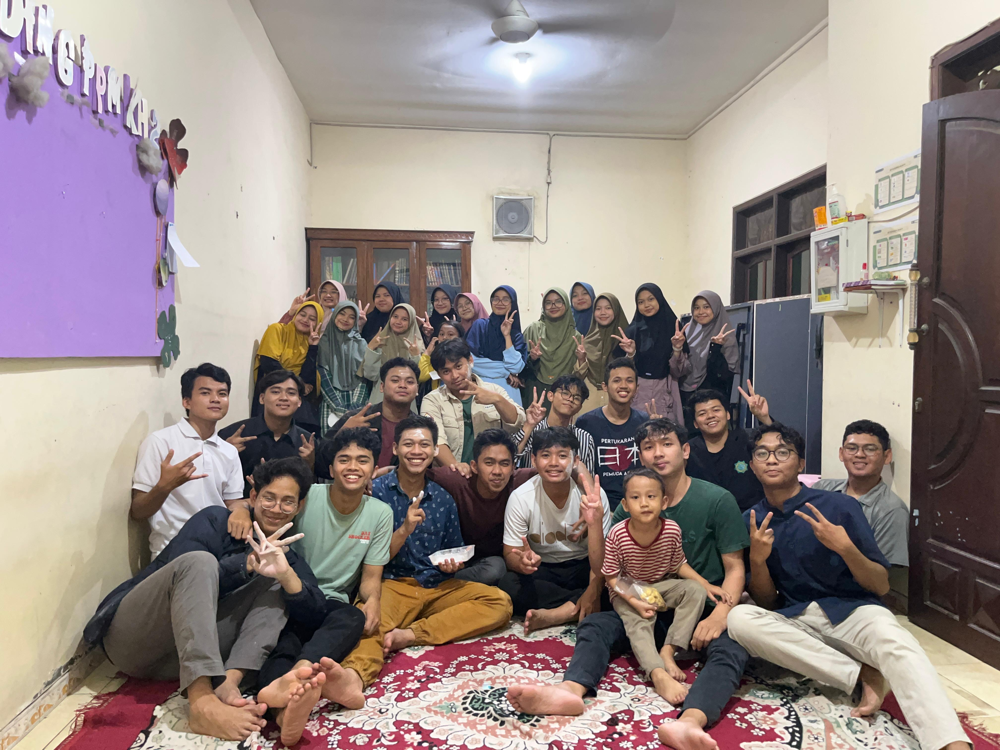
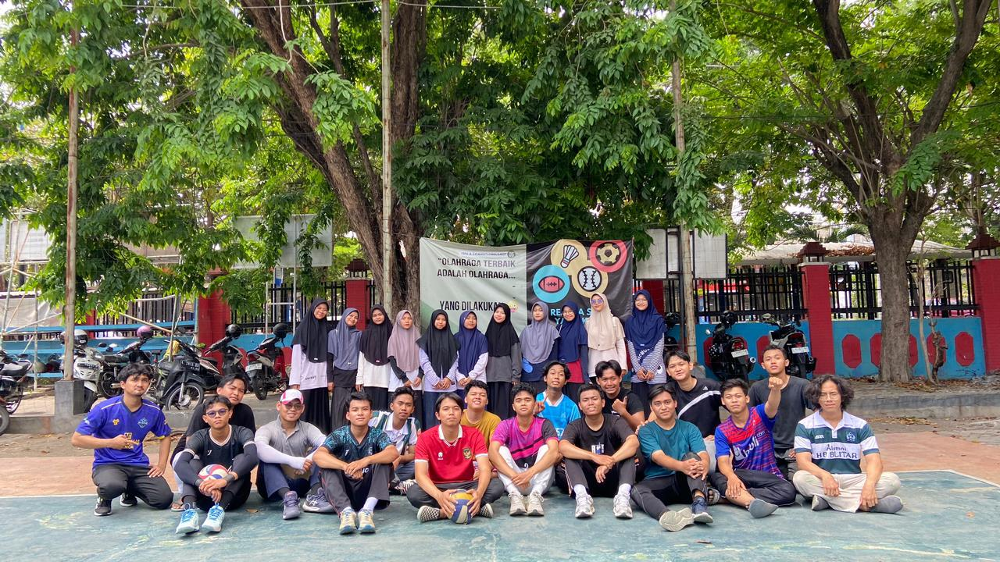

Frontend Static Demo
4 Role
Santri, wali, pengurus, guru
Static Ready
Tanpa build step tambahan
Vercel Friendly
Clean route untuk landing dan login
Landing page dan login page KH2 yang siap dipresentasikan.
Tampilan ini dibuat khusus untuk kebutuhan demo: ringan, statis, mudah di-deploy ke Vercel, dan tetap membawa nuansa sistem manajemen PPM Khoirul Huda 2.

Realtime Recap
Monitoring aktivitas harian lebih terarah
Demo Mode
Masuk ke login page statis tanpa backend
Tentang Demo
Folder terpisah untuk kebutuhan presentasi frontend statis.
Folder ini tidak mengganggu aplikasi React utama. Anda bisa langsung menjadikannya root deploy di Vercel untuk menampilkan landing page dan login page yang tampak matang saat demo.
HTML, CSS, JavaScript, dan aset gambar sudah ikut di dalam satu folder.
Route utama dan route login disiapkan lewat konfigurasi Vercel.
Memakai identitas visual dan aset KH2 yang sudah ada di proyek.
Fitur Demo
Disusun untuk terlihat presentable tanpa menunggu backend aktif.
Hero landing yang fokus
Menonjolkan manfaat platform, identitas KH2, dan call to action yang langsung mengarah ke login.
Login interaktif
Ada validasi ringan, pilihan akun demo, dan status sukses palsu untuk simulasi presentasi.
Siap deploy cepat
Cukup arahkan Vercel ke folder ini. Tidak perlu menjalankan pipeline build React utama.
Galeri KH2
Visual pendukung untuk membuat halaman demo terasa hidup.

Belajar
Pembinaan dengan suasana yang tertata dan fokus.

Keakraban
Hubungan antar santri yang kuat dan terjaga.

ORUMAWA
Kegiatan lapangan yang memperkuat kebugaran dan disiplin.
Demo CTA
Masuk ke Login Demo